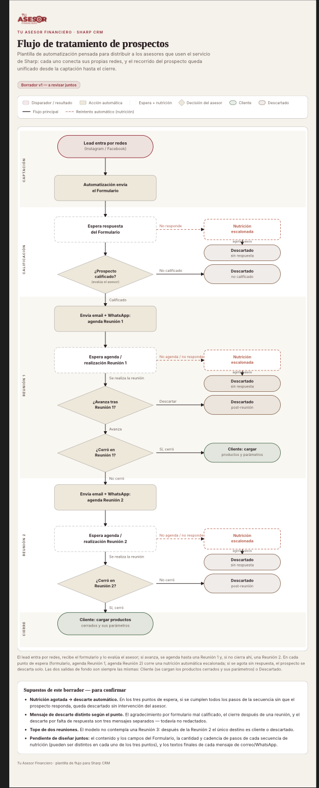

Kit Asesor · Clase 1
Ariel ya trajo el formulario, los mensajes y el seguimiento. Hoy lo validamos con cómo trabajan ustedes y cerramos lo que falta para construirlo.
Ariel · Bruno · Euge · Andrés — 13 de noviembre de 2026
Cómo vamos a trabajar
Cómo captan, qué dicen, cómo siguen. Lo que ya les funciona no se toca.
UstedesLo armo en Sharp: pipeline, mensajes, formulario, seguimiento.
YoLo recorremos juntos como si fueran un prospecto. Ven qué llega y cuándo.
UstedesLo que no suena a ustedes se cambia. Cuando anda, se los explico para que lo usen solos.
JuntosCalendario
Primera versión en una cuenta de prueba.
Andando en sus cuentas.
Prospectos reales, medidos.
Con manual y video de recorrido.
A la primera tanda de asesores.
Los temas de cada clase se ajustan según cómo vayamos.

Punto de partida · borrador v1 de Ariel
Lo vemos etapa por etapa: el dibujo, lo que Ariel ya definió y cómo lo hacen hoy.
Lo que trajo Ariel · 13 de noviembre
Antes eran 19. Se completa en 1 o 2 minutos: contacto, edad, provincia, qué le interesa y rango de ingresos. Lo profundo pasa a la primera reunión.
Invitación al formulario · no calificado · invitación a R1 · cierre después de una reunión · invitación a R2. Cada uno por email y WhatsApp.
Una por cada espera, con días y canal definidos. Si se agotan los pasos, el prospecto se descarta solo.
Hoy: ¿esto se parece a cómo trabajan ustedes? Y 4 decisiones para poder construirlo.
Etapa 1 · Captación · el dibujo de Ariel
Etapa 1 · Captación
Hoy cada canal llega por su lado. En Sharp, todo cae en una sola bandeja.
Etapa 1 · Primer contacto
Mensaje 0 y formulario, tal como los escribió Ariel.
Etapa 2 · Calificación · el dibujo de Ariel
Etapa 2 · Calificación
Ariel: el asesor decide si califica. La IA solo propone.
El asesor toca uno de los dos. El resto es automático.
Etapa 3 · Reunión 1 · el dibujo de Ariel
Etapa 4 · Reunión 2 · el dibujo de Ariel
Etapas 3 y 4 · Reuniones
Ariel: máximo 2 reuniones. Después de la R2, cliente o descartado.
El prospecto elige el horario solo, con el link de agenda que llega por email y WhatsApp.
En cada espera · la propuesta de Ariel
En cada espera · Seguimiento
Ariel: si se agota la secuencia, se descarta solo, sin que el asesor haga nada.
Ejemplo: calificó y no agenda la Reunión 1
Etapa 5 · Cierre · el dibujo de Ariel
Etapa 5 · Cierre y después
Los productos quedan cargados en la ficha. Lo violeta no está en el dibujo de Ariel: lo decidimos hoy.
Los 4 supuestos del borrador
En las 3 secuencias: después del día 35, 25 o 15 según la espera.
No calificado y post-reunión tienen su mensaje. El "sin respuesta" se avisa en el último paso del seguimiento.
No hay Reunión 3. Después de la R2, cliente o descartado.
10 campos, 5 mensajes clave y 3 secuencias, todo escrito.
Para poder construirlo
El Mensaje 0 y toda la Nutrición 1 van por email. Si escribe por mensaje directo de Instagram, no tenemos su email.
Oficial: Meta aprueba cada mensaje, 9 plantillas por número de asesor, y tarda días. No oficial: sale sin aprobación.
Va a alguien que todavía no completó nada. Para ese mismo contacto, la Nutrición 1 es solo email.
Ariel lo dejó pendiente: las alertas internas de descarte.
Su cuenta
Antes de la próxima clase
Gracias
Les mando el resumen de hoy por WhatsApp. Cualquier mensaje que se acuerden, mándenlo por ahí.